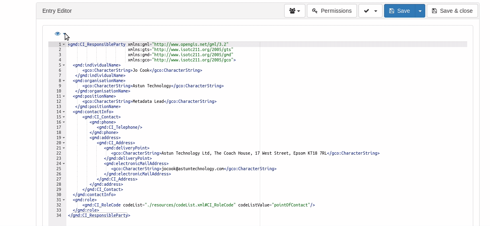
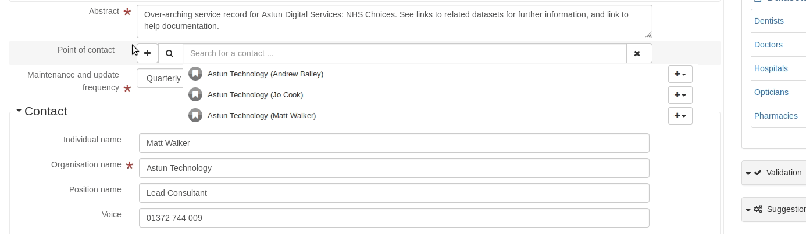
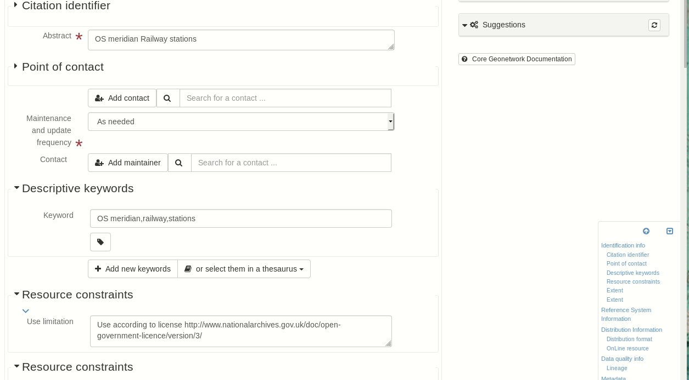
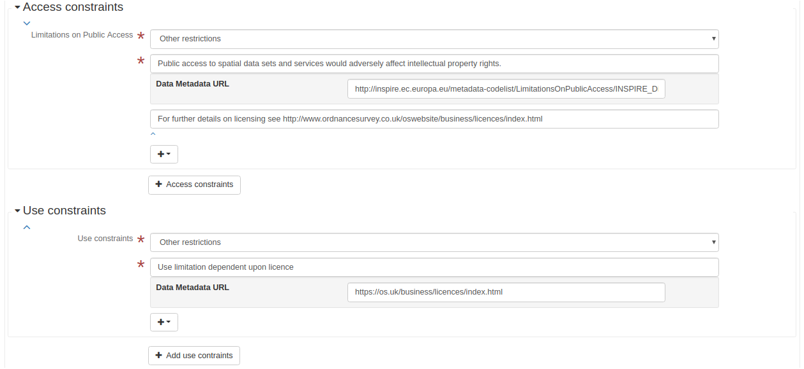
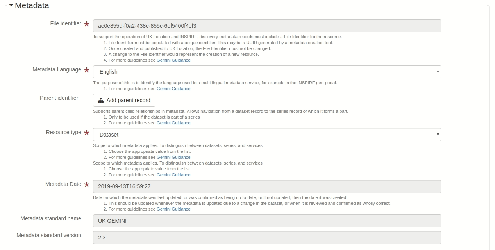
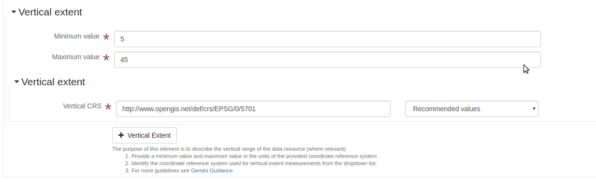
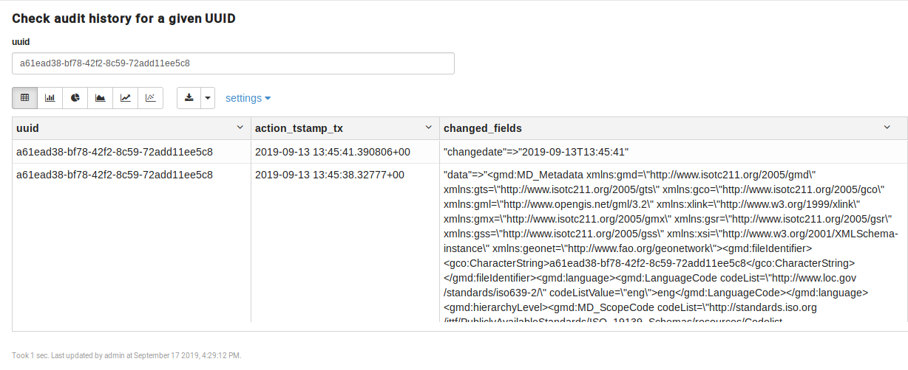
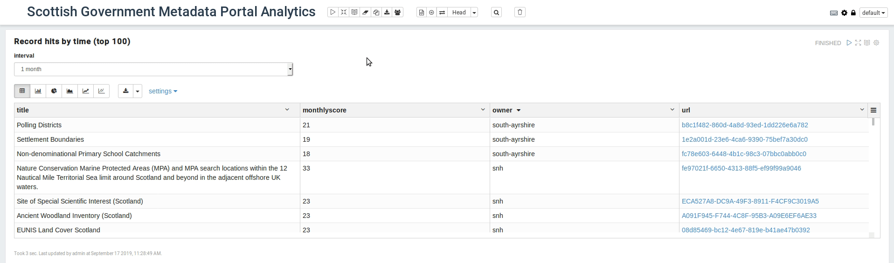

Don't Let Metadata Get You Down
FOSS4GUK 2019
Jo Cook, Astun Technology
We all know metadata is important but...
Debora Cartagena Pixnio, CC0It's also, boring, hard and time-consuming
Peter Mercator, Wikimedia, CC-By-3.0Then just as we all got to grips with Gemini 2.2...
Along comes Gemini 2.3!
The InternetBut...
What if we could make it easier and quicker?
What if we could automate the boring bits?
What if we could make it actually useful?
🤔
How?
# 1: Hidden features in Geonetwork
Code snippets
Create snippets to use when editing records


Suggestions wizard
Ensure your metadata is good quality and valid
Scripting with the API
Bulk and automated updates
#2: Improvements with Gemini 2.3
Gam Ol, PexelsBetter labelling
Matching labels with the guidance
Editing guidance
Adding explanations for all mandatory elements
CSV Import
Create valid metadata from an excel spreadsheet

"inflate-metadata"
Automatically include missing or deleted elements
#3: Really make metadata fly with additional software
US AirforcePostgresql audit plugin
Get history of changes to a record, and restore to previous point in time
Zeppelin
Create your own analytics
Conclusions
Metadata can be fun!
The Internet